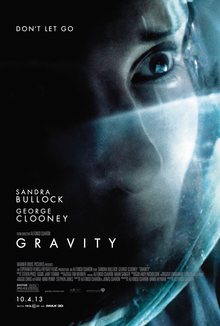

Summery:
“
"Gravity" is a 2013 science fiction thriller film directed by Alfonso Cuarón
and stars Sandra Bullock and George Clooney. The film follows Dr. Ryan Stone, a
medical engineer, and Matt Kowalski, an astronaut, as they attempt to survive after their space shuttle is destroyed by
debris while on a mission to repair the Hubble Space Telescope.
|
 |